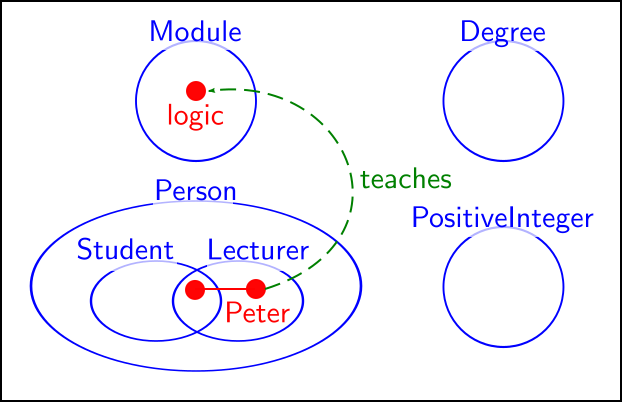

- Gödel
- Zermelo, Fraenkel, Skolem, Tarski
- Turing
Historical
Euclid's Diagrammatic Proof
Leonhard Euler
John Venn
Gottlob Frege
C.S. Peirce
And Then...
John Sowa & Sun-Joo Shin
Modern Developments
|
|
Recap
Euler Diagrams
Visualise the relationship between sets.

Venn Diagrams
"The [diagrammatic scheme] here offered may be said to underlie Boole's method, and to be the appropriate diagrammatic representation for it." (Venn, 1880)

Modern Euler Diagrams

Properties of Euler Diagrams
- WISWYG
- 1-to-1 mapping between contous and the sets that they represent.
- Free Rides (Shimojima, 1999)
- Philosophers are not Mortal!
Syllogistic Reasoning using Euler Diagrams
- The major premise "No mortals are philosophers" is represented by the contour denoting "Mortals" being disjoint from the contour denoting "Philosophers''.
- The minor premise "Every Athenian is mortal" is represented by the containment of the contour denoting "Athenians" within the contour denoting "Mortals''.
- The conclusion "Therefore no philosopher is Athenian" is clear due to the contours denoting "Athenians" and denoting "Philosophers" being disjoint.
Syllogistic Reasoning
- Diagrams can assist in Syllogistic reasoning (Sato et al, 2010).
- Are we reasoning using diagrams or sententially?
Reasoning about Software Architecture
Diagrammatic Reasoning
Spider Diagrams

Spider Diagrams

Diagrammatic Reasoning
- Spider Diagram reasoning system is sound and complete (Howse et al., 2005)
- Previous examples show an application of the "split spiders" rule.
Intuition into Completeness Proof
- Each diagram has a minimal unique normal form.
- Given two diagrams \(D_1\) and \(D_2\) we
- add all contours to each,
- add all missing zones to each,
- split all the spiders,
- combine expressions.
- Similar to proof strategy by Molina, 2000.
- Purely an application of diagrammatic rules.
Expressiveness of Spider Diagrams
Spider Diagrams are as expressive as:
- monadic first order logic with equality (Howse, 2005).
- commutative star-free regular languages (Delaney et al., 2013).
- Spider Diagrams are weakly expressive.
Reasoning Example
Expressive Diagrammatic Reasoning
Motivation for Expressive Diagrammatic Reasoning
A Software Engineering Example

Concept Diagrams

Concept Diagrams Expressiveness
- Concept Diagrams are at least as expressive as \(\mathcal{SHOIN}\).
Future Work & Conclusion
Future Work on Euler Diagrams
- Layout is an unsolved problem.
- Preference and Efficacy is currently being studied.
Future Work on Spider Diagrams
- Linking Spider Diagrams of Order and LTL
Future Work on Concept Diagrams
- Tie down expressiveness result.
- More work on patterns.
- Prototype implementation.
Conclusion
- We have considered some of the work on Euler diagram based logics over the past 20 years.
- Fully formal (but usable) diagrammatic reasoning systems.
- For this talk I've ignored interesting work on
- diagram layout,
- diagram comprehension,
- spider diagrams of order,
- second order spider diagrams,
- generalised constraint diagrams, and
- any non-Brighton work on visual logic.
Conclusion
- Spider Diagrams are a weakly expressive sound and complete diagrammatic reasoning system.
- Concept Diagrams are a practical expressive diagrammatic reasoning system.
- All of which are originally motivated by Kent, 1997, constraint diagrams.
Work in Progress
<Thank You!>